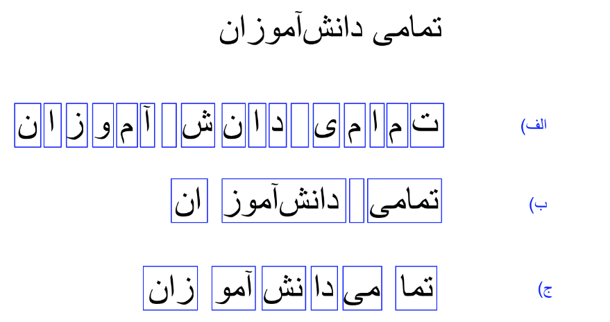
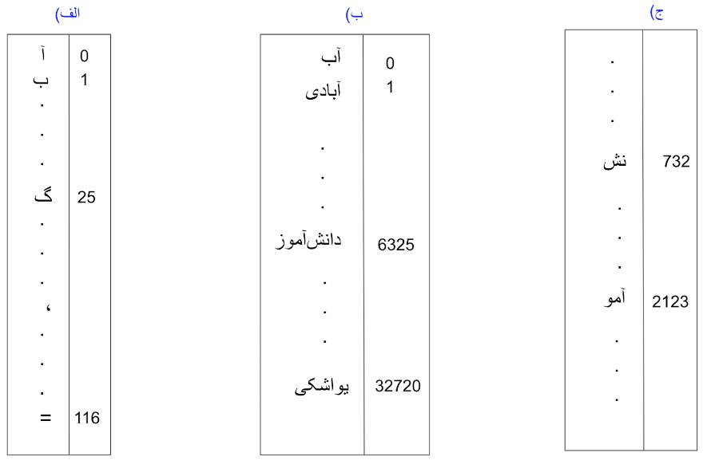
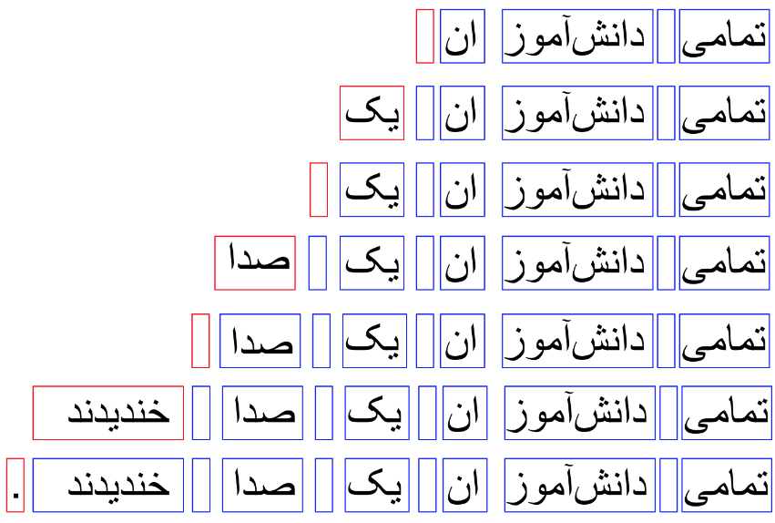

این روزها شاهد خبرهای شگفتانگیزی در مورد مدلهای جدید هوش مصنوعی از جمله ChatGPT و GPT4 هستیم. تواناهاییهای شگفتانگیز این پروژههای هوش مصنوعی به همراه اخبار و شایعاتی که پیرامون آنها شکل گرفته بحث داغ بسیاری از جمعهای فنی و حتی غیر فنی این روزهاست. سوالی که ممکنه برای هر کس پیش بیاد این خواهد بود که این ادعاها تا چه حد درست هستند. یک ذهن کنجکاو ممکن هست از این هم فراتر بره و بپرسه که این مدلهای جدید بر چه مبنایی کار میکنند و بر همین اساس چه تواناییهایی خواهند داشت. در این نوشتار تلاش خواهم کرد تا حدودی در این دو مورد دانستههای خودم را به اشتراک بگذارم.
برنامههای هوش مصنوعی مثل سری GPT یا LaMDA زیر مجموعهای از مدلهای موسوم به مدلهای زبانی بزرگ (Large Language Models) هستند. واژه بزرگ اینجا واضحاً اشاره به اندازه این مدلها در مقایسه با مدلهای مشابه دارد. در نتیجه هسته اصلی در این برنامهها مدل زبانی است. صفحه ویکیپدیا فارسی مدلهای زبانی توضیح جامع و عمیقی را در موردشان ارايه داده. ولی اگر بخواهیم به زبان ساده خلاصهش کنیم میتونیم بگیم که هدف این مدلها ادامه دادن رشته نشانهها (tokens) در یک زبان هست (به زودی به تعریف رشته نشانهها برمیگردیم). به عنوان مثال عبارت "تمامی دانشآموزان" را در نظر بگیرید. با داشتن این عبارت کاری که یک مدل زبان برای ما انجام خواهد داد ادامه دادن آن خواهد بود. مثلاً یک مدل زبان ممکن است جمله "تمامی دانشآموزان یک صدا خندیدند." را تولید کند. اگر یک کم نکتهبین باشید اینجا از خودتان خواهید پرسید خوب پس چرا جملهای مثل "تمامی دانشآموزان برتر به مرحله بعدی رفتند." و میلیونها جمله دیگری که امکان داشت نه؟ برای جواب به این سوال باید نگاه عمیقتری به نحوه عملکرد این مدلها بیاندازیم.
در بالا اشاره کوچکی به "رشته نشانهها" کردیم ولی توضیح ندادیم که رشته نشانهها یعنی چی. هر دنبالهای از علائمی که ما برای نوشتن در زبان استفاده میکنیم را میتوانیم به عنوان رشتهها نشانهها در مدلهای زبان در نظر بگیریم. این نشانهها میتوانند حروف الفبا به صورت تکتک باشند٬ و یا کلمات و پسوندها و پیشوندهای رایج٬ و یا حتی تکههای به ظاهر بیمعنی از جمله. در هر حالت ما باید بتوانیم از در کنار هم قرار دادن آنها هر جملهای را که بخواهیم در زبان مورد نظر تولید کنیم. شکل زیر را به عنوان مثالی برای هر یک در نظر بگیرید.
فارغ از اینکه کدام یک از این روشهای نشانه گذاری را انتخاب کرده باشیم، مرحله بعدی معمولاً کدگذاری این نشانههاست. در این مرحله لیست کاملی از نشانههایی که انتخاب کردهایم درست کرده و به هر کدام یک کد (عدد) تخصیص میدهیم. نتیجه این کار چیزی شبیه به یک جدول خواهد بود که در یک طرف آن نشانههای تعریف شده را داریم و در طرف دیگر کدی که برای آن نشانه در نظر گرفتهایم. ما معمولا از اعداد برای کد گذاری استفاده میکنیم و این جدول را واژگان مدل زبانی خود مینامیم. شکل زیر مثالی از جدولهایی که احیاناً با روشهای بالای نشانهگذاری درست خواهیم کرد نشان میدهد.
توجه داشته باشید که شرط لازم برای داشتن جدول واژگانی قابل استفاده این است که هر جملهای در زبان مورد نظر را بتوانیم با ترکیبی از نشانههای این جدول درست کنیم. در این صورت هر جمله برای ما تبدیل به رشتهای از کدهای عددی خواهد شد. به عنوان مثال "تمامی دانشآموزان" یک رشته عدد به صورت مثلاً [446, 21, 6325, 45] خواهد بود و "تمامی دانشآموزان یک صدا خندیدند." با استفاده از همین نوع نشانهها تبدیل به [446, 21, 6325, 45, 21, 32187, 21, 12942, 21, 782, 92, 5] خواهد شد. دقت کنید که لیست اول در واقع بخش ابتدایی لیست دوم هست. پس به طور خلاصه تنها کاری که مدل زبان برای تولید جمله "تمامی دانشآموزان یک صدا خندیدند." انجام داده است اضافه کردن عددهای کد مربوط به نشانههای بعدی به انتهای رشته اعداد اول است. شکل پایین مثالی تصویری از مرحله به مرحله اضافه شدن نشانههای پشت سر هم به عبارت اولیه تا رسیدن به یک جمله نهایی را نشان میدهد.
تا به حال گفتیم که نشانههای تعریف شده به صورت پشت سر هم به عبارتی اضافه میشوند تا آن را تکمیل کنند. ولی سوال مهم در این مرحله این است که یک مدل زبان چطور نشانههای بعدی را به ترتیب انتخاب میکند. این شاید مهمترین قسمت ماجرا باشد. سالیان سال پژوهش های زیادی برای بهتر کردن روش انتخاب نشانه های بعدی در مدلهای زبان مورد بررسی قرار گرفت که هر یک دستاوردهایی در نوع خود داشتند.
یکی از نخستین روشها در نظر گرفتن قواعد زبانی و فرمولهای منطقی برای انتخاب نشانه های بعدی بوده است. به عنوان مثال اینکه در چه جایی فعل یا فاعل لازم داریم. همزمان با در نظر گرفتن کلمات قبلی و یک سری قوانین منطقی باید بتوانیم به طور درست ادامه آن را پیدا کنیم. مثلاً برای جمله "هویجهای خرد شده را داخل قابلمه"، برنامهای که به این طریق کار کند میتواند به این نتیجه برسد که کلمه بعدی باید یک فعل باشد. و با توجه به کلمات قبلی احتمالاً داریم در مورد دستور پخت آشپزی صحبت میکنیم. پس چیزی شبیه "هویجهای خرد شده را داخل قابلمه ریخته و گاز را روشن میکنیم." ادامه مناسبی برای عبارت اولیه است. با وجود سادگی رسیدن به این نتیجهگیری برای ما (انسان هوشمند)، توضیح منطقی دقیق برای این نتیجهگیری خیلی هم ساده نیست. حتی اگر بتوانیم توصیفی منطقی و ریاضی برای این مثال پیدا کنیم، حالا باید همین کار را برای میلیونها مورد دیگر هم تکرار کنیم و برای تکتک اتفاقات ممکن قوانین منطقی پیدا کنیم و به صورت کد برای یک کامپیوتر توضیحشان دهیم. بدیهی است که در عمل انجام همچنین کاری غیرممکن خواهد بود. شاید راه حل بهتر پیدا کردن قوانین سطح بالاتری هست که بتواند به صورت همزمان روابط منطقی بین بخش وسیعی از حالات و اشیا ممکن را توضیح دهد. این جواب بهتر است ولی نیازمند روشهای بسیار پیچیدهتری خواهد بود. دانشمندان هوش مصنوعی دههها بر روی پیدا کردن چنین قوانین و راه حلهایی وقت گذاشتند ولی نتایج به دست آمده (در عین قابل تقدیر بودن) به خوبی که انتظارش میرفت نبود.
یک راه حل پر طرفدار دیگر استفاده از روشهای آماری برای تعیین کلمات (یا نشانههای) بعدی است. در این روش با نگاه به کلمات قبل سعی میکنیم کلمات بعدی را بر مبنای میزان تکرار شدن آنها در متنهای مشابه پیدا کنیم. برای مثال فرض کنید ما متن تمامی کتابهای یک کتابخانه را به یک برنامه دادیم و از پردازش آن به این نتیجه رسیدیم که هر جا کلمه "مسابقات" رو داشتیم بعدش ۱۰۰۰ بار کلمه "جهانی" آمده و ۳۰۰ بار فوتبال و ۱۵۰ بار "ریاضی" و ۵۰ بار هم کلمات دیگر. پس نتیجه میگیریم که هر بار کلمه "مسابقات" رو دیدیم به احتمال ۲ از ۳ کلمه بعدی "جهانی" خواهد بود. این یک الگوریتم بسیار ساده برای یک مدل زبان خواهد بود. ما یک جدول درست میکنیم که سطرهای آن تمام کلمات واژگان ما هستند و جلوی هر کدام تعداد بارهایی که آن کلمات تکرار شدهاند. بعد از روی آن احتمال کلمات بعدی را پیدا کرده و از آن برای پیدا کردن کلمه بعد استفاده میکنیم.
مشکل بزرگ این الگوریتم این است که فقط به یک کلمه قبل نگاه میکند. اگر ما چندین بار این روش را تکرار کنیم تا به یک جمله کامل برسیم ممکن است به جملهای کاملا بیربط مثل "مسابقات جهانی خوب یا اگر بتوان گفت من میروم مدرسه غیرانتفاعی پول داشتن سلیقه است." برسیم. دلیل آن این است که الگوریتم ما فقط به یک کلمه قبل توجه میکند و هیچ چیزی در مورد کلمات قبلی نمیداند. مثلاً فقط میداند که به احتمال خیلی زیاد بعد از "مدرسه" کلمه "غیرانتفاعی" خواهد آمد. ولی کاری ندارد که کلمات قبلی جمله چه بوده و ما اصلاً در مورد چی حرف میزدیم. همانطور که میبینیم این باعث بیمعنی شدن جمله ما میشود. شاید فکر کنید خوب پس به جای یک کلمه دو کلمه، یا حتی سه یا چهار کلمه را در نظر بگیریم. ولی این دو اشکال خیلی بزرگ دارد:
مدلهای مبتنی بر شبکههای عصبی راه حلی مناسب برای هر دو این مشکلات ارائه دادند. استفاده از شبکههای عصبی بازگشتی (Recurrent Neural Networks) تحول بزرگی در رسیدن به مدلهای زبان بهتری ایجاد کرد (اطلاعات خوبی در این زمینه در صفحه ویکیپدیا فارسی شبکه عصبی بازگشتی میتوانید پیدا کنید). به کمک آنها مدلهای زبان قادر بودند ترکیبهای پیچیدهتری در مقایسه با چند کلمهای هایی که در جدولهای بالا بررسی کردیم را تشخیص دهند و به احتمال خوبی واژههای بعدی مناسبتری را پیدا کنند. در کنار آن، فراگیر شدن استفاده از دگرنمایی (embedding) واژه (باز هم صفحه ویکیپدیای فارسی خوب ) باعث شد شبکههای عصبی بتوانند رشتههای بسیار بلندتر و مشابه به هم تری را بررسی کنند. دگرنمایی واژهها این امکان را به مدلهای زبانی میداد که بتوانند تا حدودی کلماتی که از لحاظ معنایی مشابه هم هستند را تشخیص دهند. در نتیجه دیگر لازم نداشتند که تمامی ترکیبهای ممکن را دیده باشند، بلکه به کمک شباهتهایی که بین بردارهای دگرنمایی واژهها درست کرده بودند میتوانستند تا حدود خیلی زیادی ترکیبهای مشابه را تشخیص بدهند. به عنوان مثال اگر هیچ وقت عبارت "نوار درختان بنفش" را ندیده باشند ولی "مسیر باریک درختان سبز" را دیده بودند، میتوانستند با ارتباط دادن "مسیر باریک" به "نوار" و "سبز" به "بنفش" تا حدودی به مفهومی برسند (هر چند شاید غیر ملموس ولی بهتر از هیچی).
به کارگیری شبکههای عصبی باعث شد مدلهای زبان بتوانند بخش قابل توجهی از آزمونهای از پیش طراحی شدهای را که برای امتحان توان هوشی آنها در نظر گرفته بود را حل کنند. ممکن است در اینجا سوال کنید که چطور از مدل زبان به حل سوال در آزمون رسیدیم. جواب ترفندهای هوشمندانهای است که به کار گرفته شد تا از یک مدل زبانی به یک کارگزار هوشمند برسیم. به عنوان مثال برای ساختن یک کارگزار هوشمند پرسش و پاسخ میتوان سوال را به همراه عبارتی که باعث تولید جواب میشود به ورودی داد. در این حالت اگر مدل زبانی ما نمونههای مشابه این گونه سوال و جواب را دیده باشد به احتمال زیاد جوابی درست یا غلط تولید میکند. مثلاً اگر ورودی ما "سوال: پایتخت کشور تاجیکستان کجاست؟ جواب:" باشد مدل زبانی که فرایند یادگیری آن به خوبی انجام شده باشد (داده خیلی زیاد یکی از لازمههای این هست) میتواند تشخیص دهد که باید جوابی برای سوال مطرح شده پیدا کند. این مدل ممکن است قبلاً سوالی بسیار شبیه این را دیده باشد، مثلاً "پرسش: پایتخت کشور فرانسه چه شهری است؟ پاسخ: شهر پاریس". در این صورت به کمک دگرنمایی واژهها و سایر ویژگیهای شبکههای عصبی میتواند شباهت "فرانسه" با "تاجیکستان"، "پاسخ" با "جواب" و سایر بخشهای جملات را پیدا کند و در نهایت به شباهت بین ادامه این عبارت (پاریس) با یک شهر دیگر برسد و به احتمال خوبی با در نظر گرفتن رابطه فرانسه-پاریس با تاجیکستان-دوشنبه را تشخیص دهد، و با عبارت "شهر دوشنبه" آن را تکمیل کند. رسیدن به چنین درجهای از ادراک ارتباط منطقی مستلزم فرایند طولانی یادگیری روی انبوهی از داده (در یادگیری ماشین خیلی وقتها به آن پیکره داده یا corpus میگوییم) است. برای همین مدلی که بتواند به خوبی از پس پرسش و پاسخهای سادهای مثل مثال بالا بربیاد احیاناً روی اسناد متنی معادل میلیون ها کتاب آموزش (train) داده شده.